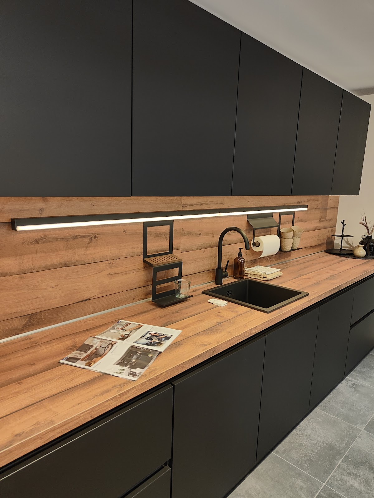
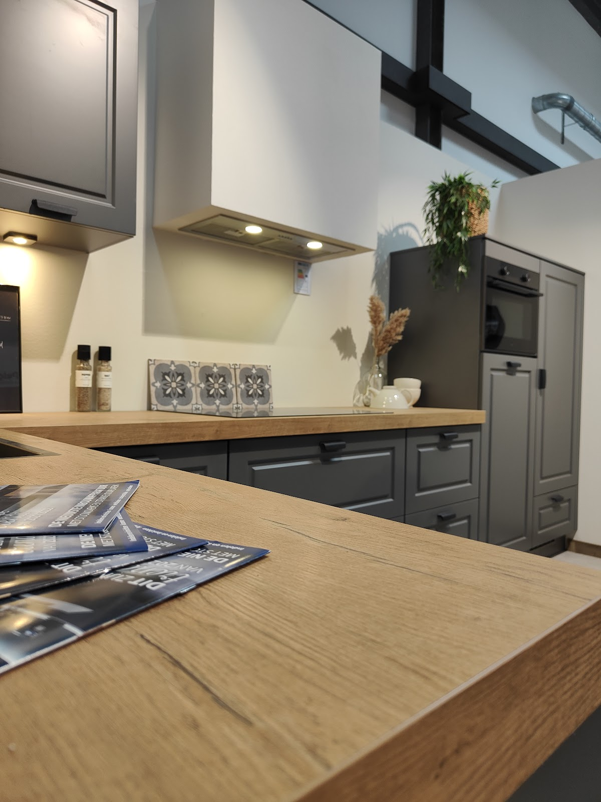
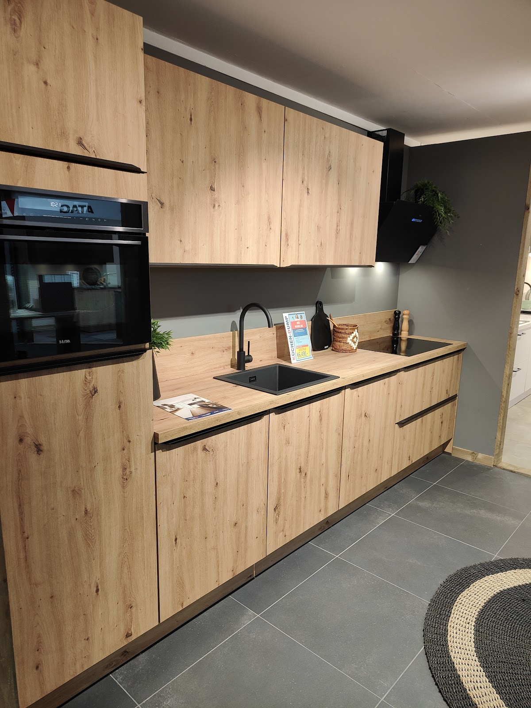
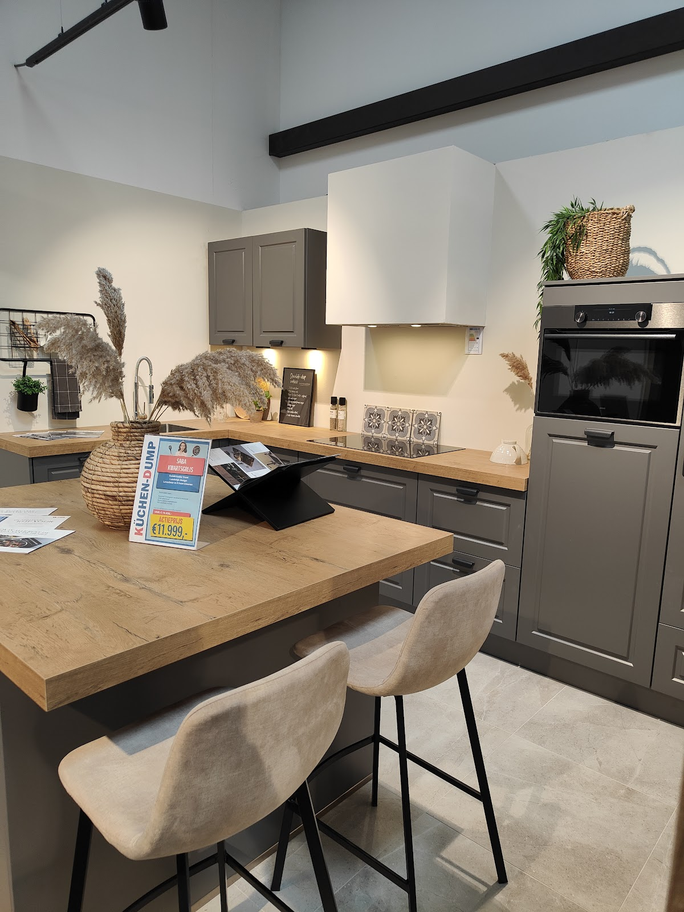
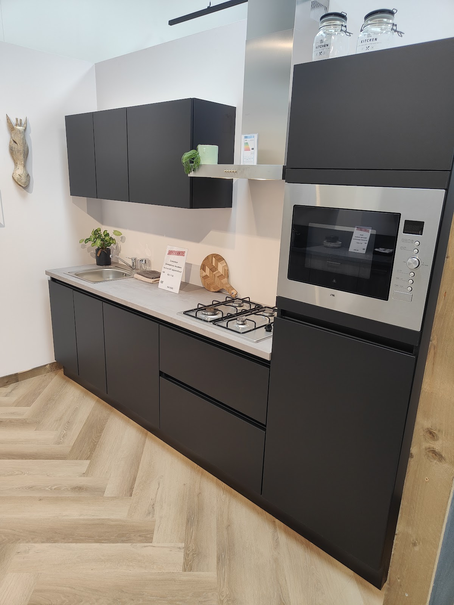
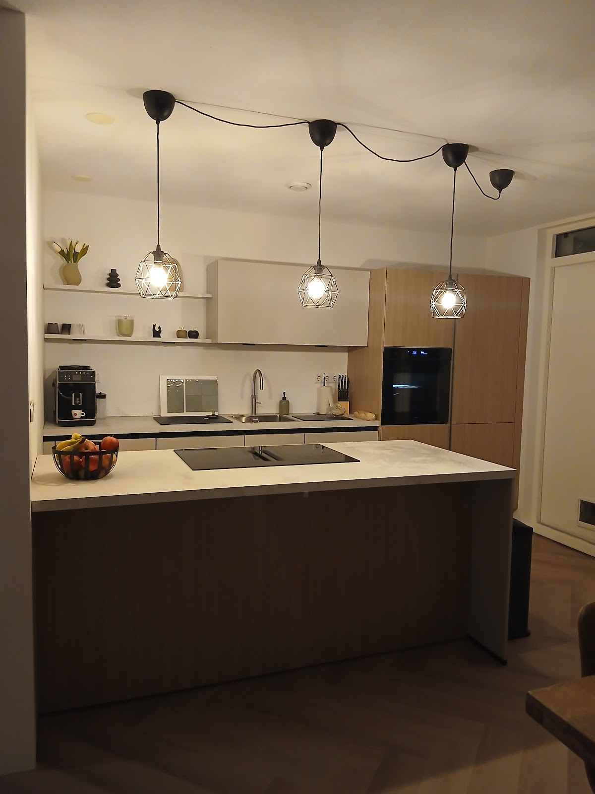
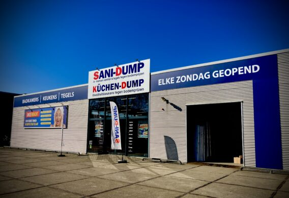

Keukenwinkel met showroom in Zwolle
Een mooie keuken. Gewoon betaalbaar.
Kom kijken in onze showroom aan de Marconistraat. We denken mee met uw ruimte en uw budget, en tekenen uw keuken in 3D.
4,8 uit 19 Google-reviews
Zo komt u aan uw nieuwe keuken
Een keuken koopt u niet vaak. Daarom nemen we er de tijd voor, van de eerste rondgang tot de laatste schroef.
-
1
Kom kijken en voelen
In de showroom staan complete keukens opgesteld, van warm eiken tot strak mat zwart. Loop gerust binnen, ook op zondag.
-
2
Samen ontwerpen
Onze adviseur denkt mee over uw ruimte en uw budget. Met een 3D-tekening ziet u vooraf precies hoe uw keuken wordt.
-
3
Zelf plaatsen of laten monteren
Handig met gereedschap? Dan plaatst u de keuken zelf. Liever ontzorgd? Dan zorgen onze monteurs voor montage en oplevering.
Te zien in de showroom
Kwaliteitskeukens en A-merk apparatuur, opgesteld zoals ze thuis komen te staan. Open de lades, voel aan het werkblad, en vraag gerust wat het kost.





4,8 gemiddeld uit 19 reviews op Google
“Ontzettend goed geholpen door Iris bij het samenstellen en realiseren van mijn nieuwe keuken. Het contact gedurende het hele traject verliep perfect. Iris denkt mee, schakelt snel en ze zijn supergoed bereikbaar. Echt een topservice en absoluut een aanrader. Dankjewel!”
“We hebben heel kundig advies gekregen in onze zoektocht naar een nieuwe keuken. Door haar kundigheid heeft Iris ons de doorslag gegeven om onze keuken bij Kuchen-dump te kopen. De montage en oplevering verliep erg soepel, snel en plezierig. Dank daar voor Jeffrey en Domeen! We zijn erg tevreden met het eindresultaat.”
“Ontzettend blij met onze nieuwe keuken van Küchen-Dump. Enorm goed geholpen voor een scherpe prijs en alle keren dat we daar binnen kwamen zijn we erg gastvrij ontvangen. We zullen Küchen-Dump dan ook zeker aanraden! 🙌🏼”
“We hebben een hele mooie keuken aangeschaft en zijn erg blij met met resultaat. Goed advies en een scherpe prijs! We waarderen het meedenken in beschikbare ruimte en budget heel erg aangezien het onze eerste zelf aangeschafte keuken was. De 3D tekening helpt met de beeldvorming …”
“Erg blij met de keuken van Kuchen-Dump! De keuken vinden we prachtig en we zijn erg goed geholpen. Jet heeft ons goed geholpen met het ontwerpen van de keuken. Erg fijn dat ze meedacht in het proces dat heeft ons erg geholpen! We hebben er voor gekozen om de keuken zelf te plaatsen wat erg gemakkelijk ging …”
Ook op zondag open.
En op donderdag tot negen uur 's avonds. U vindt ons aan de Marconistraat, in het pand van Sani-Dump.
Openingstijden
| Maandag | 09:30 tot 17:30 |
| Dinsdag | 09:30 tot 17:30 |
| Woensdag | 09:30 tot 17:30 |
| Donderdag | 09:30 tot 21:00 |
| Vrijdag | 09:30 tot 17:30 |
| Zaterdag | 10:00 tot 17:00 |
| Zondag | 11:00 tot 17:00 |
